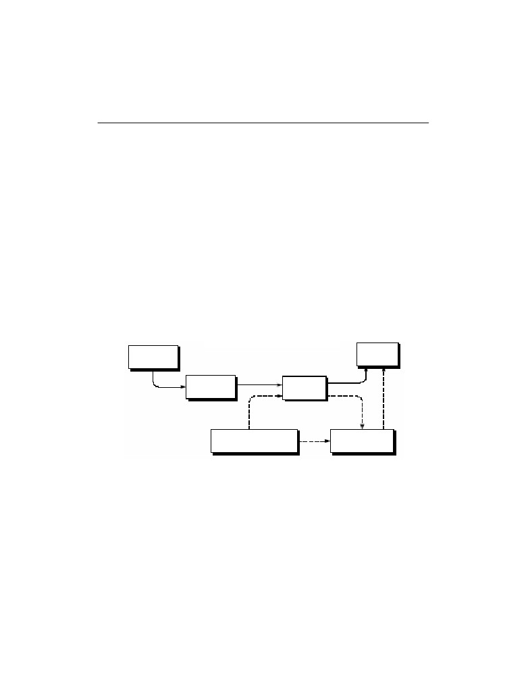
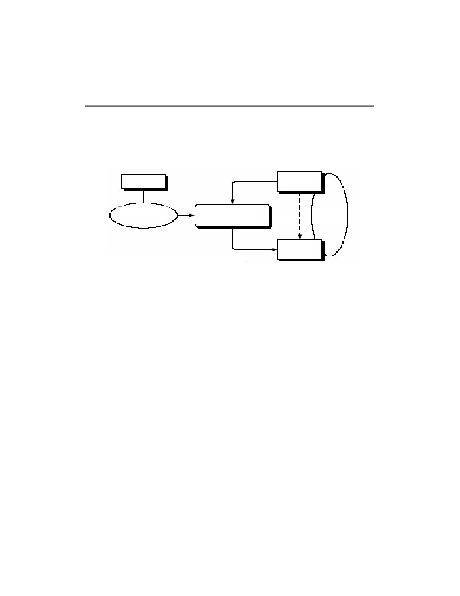
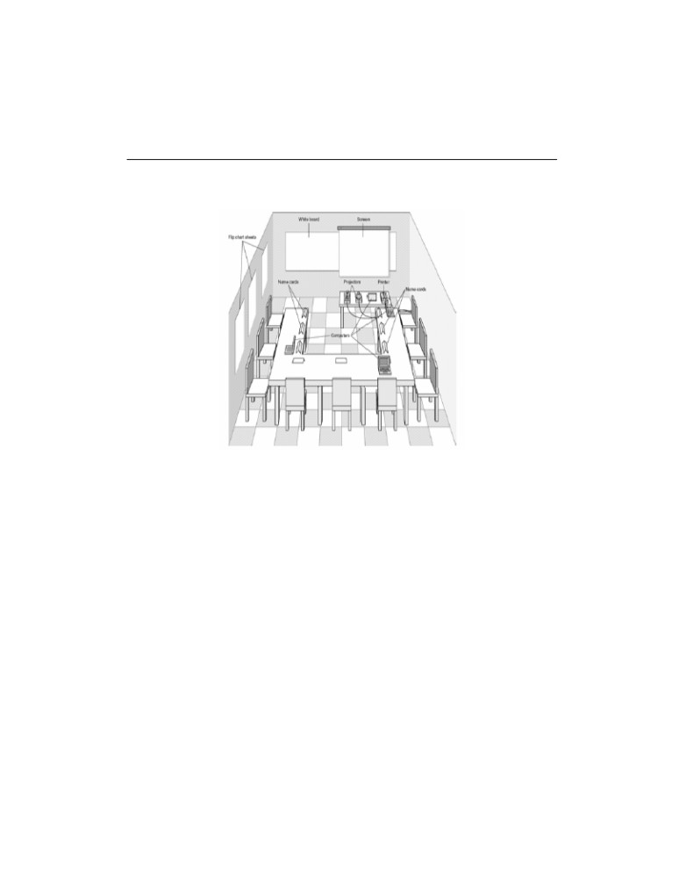

Poliščuk E. Jaroslav: Projektovanje informacionih sistema
57
3. Uvod u projektovanje i definisanje zahtjeva za
informacionim sistemom
3.1. Uvod u projektovanje i izgradnju informacionog sistema
3.1.1. Redoslijed izrade fizičkog i logičkog modela
Fizički i logički model postojećeg IS, a zatim logički i fizički model budućeg IS,
izrađuje se na osnovu poslovnih zahtjeva i zahtjeva krajnjih korisnika. Fizički model
(ugradni, implementacioni, tehnički) opisuje kako je sistem fizički i tehnički izgrađen, te
ko, gdje i kada nešto radi. Logički model (esencijalni, konceptualni, poslovni) opisuje
šta je sistem, šta radi, šta su podaci (slika 3.1). Operativni (budući fizički) sistem
prikazuje šta, ko i kada, ali ne i gdje radi, a prema potrebi može se razmatrati
organizacijski nivo, odnosno različito značenje podataka zavisno od područja unutar
poslovnog sistema i okruženja.
Budući
Postojeći
fizički IS
fizički IS
Postojeći
Budući
logički IS
logički IS
Korisnički/poslovni
Budući
zahtjev
organizacijski IS
Slika 3.1. Prikaz redoslijeda izrade fizičkog i logičkog modela IS.
3.1.2. Modeliranje informacionog sistema
Potrebna je izrada modela koji odgovaraju dijelovima poslovnog sistema. Model je
apstrakcija ili reprezentacija dijela stvarnog svijeta. Ukoliko od ranije ne postoji IS,
potrebno je odrediti "surogat" postojećeg sistema po ugledu na istovjetne sisteme u

58
Poliščuk E. Jaroslav: Projektovanje informacionih sistema
drugim poslovnim sistemima ili razvoj započeti sa izradom logičkog modela. Tehnika
oblikovanja dijagramima odvija se na slijedeći način. Izradom modela nastoji se opisati
situacija u kojoj događaj iz vanjskog svijeta pokreće (okida) process. Proces ima
određeni učinak na podatke u nekom stanju. Obavljanjem procesa podaci prelaze u
novo stanje (slika 3.2).
Događaj
Staro stanje
podataka
Sinhronizacija
Proces
Struktura
učinak
(koncept okidača)
(naredbe i pravila)
podataka
Novo stanje
podataka
Slika 3.2. Dijagram modeliranja IS [Fertalj & Kalpić, 2005].
3.1.3. Vrste modela informacionog sistema
Model podataka opisuje ŠTA su podaci, odnosno ŠTA opisuju podaci.
Konceptualni model opisuje podatke i veze između podataka. Najčešći konceptualni
model je model entiteti-veze. Logički model opisuje strukturu podataka i logičkih
datoteka, a najčešći logički model je relacioni model podataka.
Model funkcija i procesa opisuje KAKO se prikupljaju, obrađuju i distribuiraju
podaci. Model funkcija se oblikuje razlaganjem (dekompozicijom) funkcija, iterativno od
vrha prema dolje (od globalnih funkcija do osnovnih procesa). Model procesa opisuje
obradu podataka posmatranog sistema. Najčešći model procesa je dijagram toka
podataka.
Model događaja opisuje KADA se podaci obrađuju, odnosno razmatra učinke
koje događaji imaju na procese i podatke, te vrši opis stanja. Kao primjer se može
navesti dijagram promjene stanja.
Model resursa/sredstava opisuje izvršioce, odnosno KO obrađuje podatke,
GDJE se podaci nalaze i GDJE se podaci obrađuju.
Modeliranje programa podrazumjeva predstavljanje struktura
(programskih)
modula IS, npr. strukturnim kartama.
Poliščuk E. Jaroslav: Projektovanje informacionih sistema
59
3.1.4. Ključne aktivnosti i učesnici
Ključne aktivnosti, u nekim metodama, zajedno se zovu informaciono
inženjerstvo. Kao ključne aktivnosti mogu se uočiti sistemska analiza i sistemski dizajn.
Sistemska analiza (analiza sistema) proučava poslovanje sa ciljem da dâ preporuke za
poboljšanja sistema i specifikacije zahtjeva za rješavanje. Sistemski dizajn (dizajn
sistema) omogućava specifikaciju ili konstrukciju računarom podržanog rješenja
identifikovanih poslovnih zahtjeva.
Učesnici (nosioci uloga) u navedenim aktivnostima su:
Korisnik
(korisnik usluga, klijent, osoba ili grupa za koju se gradi IS), šta
podrazumjeva korisnika sistema i vlasnika sistema. Korisnik sistema (krajnji korisnik)
neposredno koristi IS pri obavljanju svakodnevnih poslova ili koristi informaciju
dobijenu iz IS. Vlasnik sistema
(naručilac, stvarni vlasnik ili predstavnik uprave)
naručuje i plaća razvoj i održavanje sistema, postavlja prioritete i određuje politiku
njegovog korištenja;
Projektant (dizajner sistema) je tehnički stručnjak koji oblikuje sistem tako da
zadovolji zahtjeve korisnika, prevodi poslovne zahtjeve i ograničenja u tehničko
rješenje, oblikuje datoteke, baze podataka, ulaze, izlaze, ekranske forme, mrežu i
programe, integriše rješenje, a može biti i graditelj sistema;
Graditelj sistema
(programer, projektant, stručnjak koji izgrađuje sistem)
provjerava njegovu ispravnost te ga isporučuje u primjenu, konstruiše komponente
sistema na osnovu specifikacija koje rade dizajneri sistema.
Sistem analitičari razumiju i poslovanje i računarsku obradu podataka. Njihov
zadatak je da provode sistemsku analizu i dizajn. Povezuju one koji trebaju računar i
one koji poznaju informacione tehnologije (IT). Formalna definicija [Whitten et. al,
2000] sistem analitičara glasi:
Sistem analitičar pomaže proučavanju problema i potreba poslovanja radi
određivanja kako poslovni sistem i informaciona tehnologija mogu najbolje riješiti
problem i postići unaprijeđenje poslovanja. Plodovi ove aktivnosti su poboljšani
poslovni procesi, poboljšani informacioni sistemi te nove ili poboljšane aplikacije, a
često sve zajedno.
Sistem analitičar je istraživač, arhitekta i kontrolor, rješavalac poslovnih problema,
zagovornik promjena, psiholog, trgovac, političar. Većina sistem analitičara koristi
specifičnost pristupa, koja se naziva životni ciklus razvoja sistema, odnosno
sistematičan i metodičan pristup rješavanju problema sistema.
60
Poliščuk E. Jaroslav: Projektovanje informacionih sistema
3.2. Definisanje zahtjeva za informacionim sistemom
3.2.1. Ključne aktivnosti
Ključne aktivnosti, koje se mogu izdvojiti u definisanju zahtjeva za informacionim
sistemom, su prikupljanje informacija, prikupljanje podataka i ustanovljavanje činjenica,
što će u narednom tekstu biti detaljnije opisano.
3.2.2. Prikupljanje informacija
Jedna od aktivnosti kod definisanja zahtjeva za IS su intervjui sa ključnim
korisnicima i radne sjednice. Ako naručilac zapošljava informatičare svakako ih treba
uključiti u analizu. Sučeljavanje korisnika i informatičara ubrzava rješavanje
proturječnih iskaza. Kao zamjena za intervjue koriste se upitnici i ankete, koji su
pogodni i za prikupljanje informacija o resursima. Analiza dokumentacije podrazumjeva
prikupljanje cjelokupne dokumentacije značajne za poslovanje, radi boljeg utvrđivanja
pravila, poslovne politike, ciljeva poslovanja i strukture informacija.
Nužna je ocjena postojećih aplikacija i/ili računarom podržanih podataka, radi
analize podataka, ali i zbog njihove konverzije u novi sistem. Posmatranje, odnosno
neposredni uvid u poslovne procese posmatranjem radnih sredina (način izrade i
razmjene dokumenata, procesi osnovne djelatnosti), je značajan vid definisanja
zahtjeva za IS. Postupak analize mora biti prilagođen korisniku. Evidentiranje rezultata
analize poželjno je obaviti CASE alatima.
3.2.3. Postupak intervjuisanja
Intervju mora biti neusiljen i elastičan razgovor sa ispitanikom u obliku niza pitanja
i odgovora. Ispitanik se pojavljuje u ulozi pasivnog sagovornika (!?). Sagovornici su
rukovodioci, krajnji korisnici i ostali učesnici iz poslovnog sistema. Standardno
uključuje dva sagovornika, ali može i više, i to korisnika i ispitivača. Individualni intervju
je kada učestvuje jedan korisnik, ili učesnici koji rade isti posao, dok je intervjuisanje
grupe kada se razgovara sa više korisnika iz različitih područja.
Informacije se prikupljaju nizom pojedinačnih razgovora. (Prve) razgovore treba
voditi prema unaprijed dogovorenom planu i rasporedu, šta treba da obezbjedi
koordinator intervjua. Postupak intervjua je spor i neefikasan, jer se organizacija
razgovora mora obaviti za svaki pojedini razgovor. Nakon završetka analize i sinteze
dobijenih informacija, neke razgovore (ponekad i čitavu seriju) treba ponoviti da bi se
Poliščuk E. Jaroslav: Projektovanje informacionih sistema
61
upotpunile dobijene informacije ili uskladili proturječni iskazi. Ukupan broj razgovora ne
može se unaprijed tačno odrediti i treba ga prilagoditi stvarnoj situaciji.
3.2.4. Tehnika intervjuisanja
Priprema za razgovor treba da sadrži utvrđivanje informacija koje treba saznati,
proučavanje postojeće dokumentacije i prethodnih nalaza, određivanje dokumentacije
koju treba prikupiti i priprema pitanja koja će biti postavljena tokom razgovora.
Priprema pitanja podrazumjeva izradu jezgra tema, to jest standardnih pitanja, i izradu
sveobuhvatnog potsjetnika i izdvajanje prikladnih pitanja.
Mogući plan i obavljanje razgovora može da se odvija na slijedeći način:
1. Trajanje prvog razgovora je 2 sata (okvirno 1,5 do 2,5 sata);
2. Početak razgovora, koji sadrži predstavljanje učesnika i upoznavanje sa
svrhom razgovora (prikupljanje informacija o … );
3. Vođenje razgovora, odnosno postavljanje pitanja i zapisivanje odgovora,
prikupljanje dokumentacije, ... ;
4. Završetak razgovora je približno
5 do10 minuta prije isteka planiranog
vremena. Prekida se redoslijed postavljanja pitanja, provjerava se da li postoji
nešto što je sagovornik htjeo reći a nije bilo pitano, provjerava se da li treba
proširiti krug sagovornika, dogovara se nastavak razgovora
(dopunski
razgovor) kada voditelj razgovora nije postavio sva planirana pitanja ili smatra
da je razgovor nametnuo nova pitanja;
5. Zahvala na razgovoru.
Preispitivanje i pojašnjenje sadržaja se sastoji od provjera zapisanih navoda radi
upotpunjavanja bilješki: telefonom, elektronskom poštom ili novim sastankom.
Dokumentovanje razgovora sačinjavaju:
• Samostalno pisanje zapisnika (“Ko ne razumije, ne može zapisivati.”). Kada u
razgovoru sudjeluje više analitičara, određuje se voditelj razgovora koji je
ujedno i zapisničar, a ostali ulažu primjedbe;
• Zapisnik treba da sadrži: naziv projekta, vrijeme i mjesto održavanja
razgovora, spisak učesnika, sadržaj razgovora
(tekst zapisnika), popis
prikupljene dokumentacije i ime zapisničara;
• Zapisnik mora sadržavati ono što je rečeno i slijediti tok razgovora;
• Zapisnik ne smije nametati zaključke, jer su oni rezultat analize.
62
Poliščuk E. Jaroslav: Projektovanje informacionih sistema
Autorizacija
(ovjera) zapisnika se vrši tako da se zapisnik dostavlja na uvid
sagovorniku, koji potvrđuje vjerodostojnost zapisnika. Po potrebi sagovornik može
nadopuniti dijelove za koje smatra da nisu evidentirani ili pojasniti dijelove za koje misli
da su pogrešno protumačeni.
3.2.5. Preporuke za vođenje intervjua
Tokom provođenja intervjua treba pitati o svemu što se smatra važnim. Ništa nije
samo po sebi razumljivo i svima jasno. Ne pretpostavljati da se unaprijed zna o čemu
se radi. Repertoar i vrste pitanja može biti slijedeći:
1. Pitanja zatvorenog tipa: Koliko ... obrađujete (u nekom razdoblju)?, Na koji
način obrađujete ... ?;
2. Pitanja otvorenog tipa: Što mislite o ... ?, Koji su najveći problemi ... ?;
3.
“Probna” pitanja:
Zašto?, Možete li navesti primjer za takvu situaciju?,
Molim detaljnije objašnjenje za
Analizom odgovora se razdvajaju činjenice od mišljenja, utvrđuje se da li pojedine
činjenice odgovaraju drugima, analiziraju činjenice koje se ne poklapaju i vrši provjera
odgovora različitih sagovornika na isto pitanje.
Preporučuje se slijedeće ponašanje: iskrenost i nepristranost
(cilj je naći za
korisnika najprikladnije rješenje, a ne naturati određeno programsko rješenje ili
računarsku platformu), pažnja i jezgrovitost tj. “brzo misli, jasno govori”, izbjegavanje
sugestivnih pitanja, nenametanje zaključaka i ležernost
(plus praćenje reakcija
sagovornika). Grupno intervjuiranje je potrebno izbjegavati i po potrebi nadoknaditi
radnim sjednicama. Ovu vrstu intervjuisanja iznimno provesti kada se želi utvrditi
zajednički interes ili protivrječnost.
3.2.6. Upitnici i ankete
Upitnik je, u suštini, pismeni intervju. Sadrži pitanja koja se postavljaju tokom
razgovora (okvirno 20 pitanja). Može se dostaviti korisniku prije ili nakon intervjua.
Nedostaci upitnika su slijedeći: ispitanik može prilagoditi (kontrolisati) svoje odgovore,
teško je procijeniti iskrenost (spontanost) odgovora, a može i obeshrabriti ispitanika.
Anketa može da obuhvatiti više ispitanika. Pitanja su zatvorenog tipa, a odgovori i
obrada odgovora mogu se standardizovati. Pogodna je za popis resursa.
Poliščuk E. Jaroslav: Projektovanje informacionih sistema
63
Na osnovu navedenog, može se zaključiti da je intervjuisanje najelastičnije!
Pomoću intervjua se može više naučiti o stavovima, osjećajima i motivaciji osoblja.
Tokom intervjua analitičar i ispitanik se nalaze jedan nasuprot drugom, pa analitičar
može posmatrati način na koji ispitanik odgovara i po potrebi proširiti ili usmjeriti
pitanja.
3.2.7. Proučavanje dokumenata
Prikupljaju se svi dokumenti do kojih se može doći. U prvom redu treba prikupiti
dokumente koji su nastali kao rezultat analize procesa, tipične dokumente (pravilnici,
zakoni, obrasci, izvještaji) i dokumente nastale analizom podataka. Poželjno je da
dokumenti budu reprezentativni, tj. popunjeni na tipičan način (tako se može ustanoviti
koje informacije se unose i na koji način). Reprezentativni dokumenti najčešće ne
ukazuju na izuzetke, to jest podatke koji se rjeđe bilježe, ali ipak trebaju. Stalno
bilježenje nekih podataka ne mora značiti da su ti podaci stvarno potrebni. Treba
prikupiti više uzoraka iste vrste dokumenta!
Vrijednost informacija o analiziranoj organizaciji prikupljena
(samo) preko
dokumenata je niska. Praksa može odudarati od pravilnika i administrativnih obrazaca.
Treba shvatiti zašto i kada dokumenti nastaju, kako se popunjavaju, koliko su potrebni,
te šta treba promijeniti da bi se popravili (sadržaj, lakoća popunjavanja i čitanja).
Nužno je modele (podataka), razmatrane analizom, provjeriti kod korisnika.
3.2.8. Evidencija i analiza postojećih aplikacija
Budući da su nedostaci opreme, podrške i podataka najčešći razlozi za izgradnju
novog IS, potrebno ih je evidentirati i analizirati. Vrši se procjena aplikacija i (baza)
podataka u primjeni, i to: korišteni programski jezici i alati, uključujući programe za
kancelarijsko poslovanje (npr. Excel), podržane funkcije i način posluživanja programa,
međusobna povezanost različitih aplikacija i podataka, postojeće platforme (računari,
operativni sistem, mreža, SUBP), kao i sastav i stepen informatičke obučenosti
korisnika.
Analiziraju se nedostaci sistemske opreme i programske podrške. U prvom redu
se analizira nepovezanost aplikacija
(tzv. informatička ostrva), loša programska
rješenja
(funkcionalnost, ergonomija), nepouzdanost, integritet, zaštita i sigurnost
podataka. Takođe se analizira nepostojanje programske dokumentacije, tehnološka
zastarjelost (programski jezici i alati, nemogućnost rada u višekorisničkom okruženju,
grafički interfejs).
64
Poliščuk E. Jaroslav: Projektovanje informacionih sistema
Nedostaci modela podataka mogu biti različiti. Najčešći nedostaci su različitost
modela podataka postojećih aplikacija i nedostaci unutar pojedinih modela. Različitost
modela podataka postojećih aplikacija se očituje u tome da entiteti iz stvarnog svijeta
nisu jednako zastupljeni u postojećim modelima, isti entitet iz stvarnog svijeta
pojavljuje se pod različitim nazivima, isti entitet iz stvarnog svijeta opisan je različitim
atributima, dva ili više entiteta iz stvarnog svijeta su prikazani različitim brojem entiteta
u modelu podataka. Nedostaci unutar pojedinih modela su, najčešće, nedefinisanost
identifikatora (primarnih ključeva), nedefinisanost veza među podacima, najčešće kao
posljedica nepostojanja primarnih ključeva, nedefinisanost veza i pored postojanja
primarnih i drugih (stranih) ključeva. Navedene pojave su posljedica razvoja tokom
upotrebe i nedoslijednosti tog razvoja, naglašenog ponavljanje uvedenog prilikom
izrade zahtjevnih ili složenih programskih rješenja, kao i ukupne nenormalizovanosti
modela.
3.2.9. Posmatranje poslovnog sistema
Definisanje zahtjeva za IS se može dopuniti uvidom u poslovne procese, odnosno
posmatranjem radnih sredina. Posmatra se lokacija i kretanje ljudi, tok izvršavanja
poslova, fizički ulazi i izlazi sistema, zaprimanje, izrada i razmjena dokumenata,
procesi osnovne djelatnosti, npr. proizvodnje. Prednost ovakvog pristupa je u tome što
je analitičar u stanju da realno sagleda poslovni proces. Ovaj pristup je efikasan, ako
se dobro provede, i obezbjeđuje pouzdanost prikupljenih informacija. Nedostaci
posmatranja poslovnog sistema su neefikasnost, ako se dobro ne provede, znatan
utrošak vremena, ometanje i nelagodnost posmatranih osoba, mogućnost manipulacije
posmatrača, npr. prikrivanjem uobičajenog kršenja radnih procedura.
Podaci dobijeni iz malog broja kratkotrajnih posmatranja mogu biti nepouzdani i
netačni. Posmatranje na licu mjesta je najteža metoda za utvrđivanje činjenica.
3.2.10. Radni sastanci
Radni sastanci (sjednice) se organizuju da analitičari i korisnici zajednički provode
analizu i oblikovanje. Cilj sjednice je (zajedničko) pronalaženje najboljeg rješenja. Za to
je potreban poseban prostor i izolacija, moderator, dnevni red i zapisnici (slika 3.3).
Genijalnost grupe se koristi za prikupljanje ideja i definisanje informacionih
potreba, pri čemu se korisnici potiču na aktivno i kreativno sudjelovanje. Izvodi se tako
da se od svakog ispitanika iz grupe traži da definiše svoj pogled na idealno rješenje.
Svaki učesnik iznosi sve što mu pada na pamet u vezi sa problemom koji se rješava.
Od predloženih rješenja odabira se najbolje prema realnoj izvodljivosti. Postupak je

Poliščuk E. Jaroslav: Projektovanje informacionih sistema
65
koristan tamo gdje postoje korisnici koji dobro poznaju sistem, ali teško prihvataju nove
ideje.
Slika 3.3. Prostor za radne sjednice [A.Dennis & B. Haley Wixom, Systems Analysis
and Design, John Wiley & Sons, 2000].
Prednosti radnih sjednica su njihova pogodnost za projekte kojima se rješavaju
problemi važni za cijeli poslovni sistem ili veći dio poslovanja. Njihovim organizovanjem
se izbjegavaju specifični (egzotični) i nejasni zahtjevi, preciznije se ustanovljava doseg
projekta i bolje uočava protivrječnost zahtjeva. Nedostaci radnih sjednica su pasivnost
učesnika, “usitnjavanje” razgovora i često udaljavanje od tema. Sjednice treba da traju
više dana (5 do 10) u nekoliko sedmica. Ovom zahtjevu u praksi je vrlo teško udovoljiti
zbog obaveza učesnika. Otpor sjednici je srazmjeran nivou položaja konkretnog
učesnika. Otpor je naročito naglašen kada poslovni sistem zapošljava informatičare, jer
se podrazumijeva da je informatizacija isključivo njihov posao.
3.2.11. Razvoj prototipa
Razvoj prototipa se koristi kada korisnik ne može tačno da definiše svoje
informacione potrebe prije nego što se izgradi informacioni sistem. Razlog tome može
biti nedostatak postojećeg modela na kojem bi korisnik zasnivao svoje potrebe ili pak
66
Poliščuk E. Jaroslav: Projektovanje informacionih sistema
teška vizuelizacija budućeg sistema. Da bi se olakšala vizuelizacija budućeg sistema
izgrađuje se sistem koji zadovoljava neke osnovne, inicijalne potrebe. U radu sa
takvim sistemom korisnik otkriva svoje informacione potrebe, te se sistem modifikuje
kako bi se zadovoljile te potrebe. Postupak korištenje sistema i modifikovanje istog
iterativno se ponavlja, a informacione potrebe korisnika otkrivaju korištenjem sistema.
Izrada prototipa pogodna je u onim okruženjima gdje je teško definisati konkretni
model sistema, te u okruženjima gdje se informacione potrebe korisnika mjenjaju ili
razvijaju (prototipski model razvoja IS je obrađen u podtački 2.4.3).
3.2.12. Najčešći problemi pri prikupljanju informacija
Ponašanja korisnika često može da uzrokuje niz problema pri definisanju zahtjeva
za IS. Informatičkim žargonom su opisana ponašanja koja se mogu očekivati od
korisnika.
1. Taktika “kuhinjskog sudopera”: korisnik navodi (preko)brojne potrebe, gomilu
nepotrebnih izvještaja, ekranskih formi, sortiranja, izračunavanja i sl. Ovakav
pristup obično je uzrokovan pomanjkanjem iskustva korisnika, koji ne zna šta
bi mu stvarno moglo zatrebati ili nije u stanju izdvojiti ono šta je bitno;
2. Taktika
“dimne zavjese”: korisnik traži više mogućnosti, a zapravo mu je
potrebna samo jedna ili dvije. Dodatni zahtjevi služe za postizanje bolje
nagodbe sa analitičarom. Ova taktika obično oslikava korisnika sa dobrim
poznavanjem onoga šta želi, a zahtjeve treba reducirati na one realne i
izvodljive;
3. Taktika "Treba mi isto, ali u boljem obliku": korisniku koji koristi ovu taktiku
nedostaje volja ili znanje, a ponekad oboje. Šanse za uspješno definisanje
problema su male, jer samo korisnik može izraziti svoje potrebe i probleme.
Korisnik je sklon prešutjeti izuzetke, koji su bitni (nužni!) za uspješnu realizaciju, a
obično izuzeci zahtijevaju i najviše napora tokom ugradnje: "To je naša jedina
procedura … (osim kada … )". Ne izjednačavati “tako se uvijek radi” sa “tako treba
raditi”!